Pythagoras: Greek (575–500 BCE)
The one mathematician whom most people remember from their early school days is Pythagoras, whose name is attached to a theorem. As we embark on our exploration of the Pythagorean theorem, we are faced with some questions. Chief among them is, Why is the relationship that historically bears his name—the Pythagorean theorem—so important? There are many potential reasons: it is easy to remember; it can be easily visualized; it has fascinating applications in many fields of mathematics; and it is the basis for much of mathematics that has been studied over the past millennia. Yet, it may be best to begin at its roots—with the mathematician whom we credit as being the first to prove this theorem—and examine the man himself, his life, and his society.
When we hear the name Pythagoras, the first thing that pops into our minds is the Pythagoreans theorem.1 When asked to recall mathematics instruction somewhat beyond arithmetic, it is common to remember that a2 + b2 = c2. Those with a sharper memory may recall that this could be stated geometrically: the sum of the areas of the squares drawn on the legs of a right triangle is equal to the area of the square drawn on the hypotenuse. We can see this clearly in figure 2.1, where the area of the shaded square is equal to the sum of the areas of the two unshaded squares.
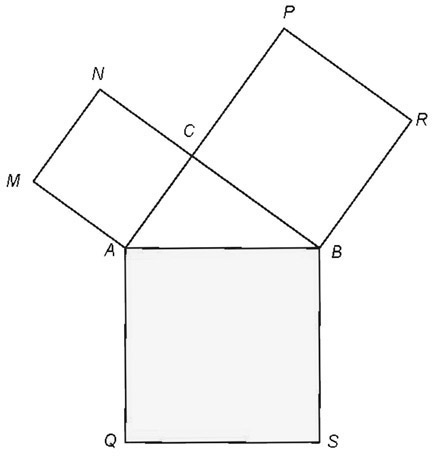
Figure 2.1.
There is probably no accurate picture of Pythagoras available today; however, the first biography of him was written about eight hundred years after his death. It was authored by Iamblichus, one of many Pythagoras enthusiasts, who tried to glorify him. Furthermore, although throughout history Pythagoras had been mentioned many other times by well-known writers, such as Plato, Aristotle, Eudoxus, Herodotus, Empedocles, and others, we still do not have very reliable information about him. Some of his contemporary followers actually believed that he was a demigod, a son of Apollo, a conviction they supported by noting that his mother was a very beautiful woman. Some reported that he even worked wonders.2
But just as he was called the greatest mathematician and philosopher of antiquity by some, he was not without critics who reviled him. The latter claimed that he was merely the founder and chief of a sect—the Pythagoreans; undermining the praise of him by authors, these critics argue that the many scientific results that came from this sect were written by its members and dedicated to its leader, thus, they were not the work of Pythagoras himself. The critics considered him a collector of facts without any deeper understanding of the related concepts; therefore, they believed that he did not truly contribute to a deep understanding of mathematics. Similar criticism also was aimed at such luminaries as Plato, Aristotle, and Euclid. This is seen throughout these historical recollections. We must remain mindful of these uncertainties when we consider the “facts” about Pythagoras’ life and work.
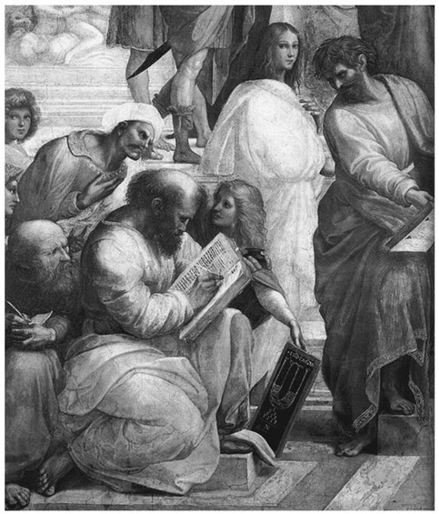
Figure 2.2. Pythagoras depicted in The School of Athens (fresco, Rafael, 1509–1511).
Pythagoras was born in roughly 570 BCE on the island of Samos (located on the west coast of Asia Minor). His initial and perhaps most influential teacher was Pherecydes, who was primarily a theologist; Pherecydes taught religion, mysticism, and mathematics to Pythagoras. As a young man, Pythagoras traveled to Phoenicia, Egypt, and Mesopotamia, where he advanced his knowledge of mathematics and pursued a variety of other interests, such as philosophy, religion, and mysticism. Some biographers believe that, in his late teens, Pythagoras traveled first to Miletus, a town in Asia Minor near Samos, where he continued his studies in mathematics under the tutelage of the famous philosopher and mathematician Thales of Miletus. It is very likely that he also attended lectures from another Miletic philosopher, Anaximander, who further inspired Pythagoras in geometry. When he returned to Samos at the age of thirty-eight, Polycrates had come to power; this tyrant ruled Samos from 538 to 522 BCE. We are not sure whether that is what prompted Pythagoras to leave Samos, since soon thereafter, in about 530 BCE, he moved to Croton (today known as Crotone, in southern Italy).
In Croton, Pythagoras founded a community—or society—whose main interests were religion, mathematics, astronomy, and music (or acoustics). Members of this community became known as the Pythagoreans. The Pythagoreans’ goal was to explain the nature of the world, using numbers. Specifically, they held a strong conviction that all aspects of nature and the universe could be described and expressed by means of the natural numbers and the ratios of those numbers. This belief, however, suffered a setback when the society learned that the very emblem of their community—the pentagram (a symmetric, five-cornered star)—contradicted their core numerical principles.
One consequence of their overriding belief in the connectedness between the natural world and natural numbers would have been that, in particular, every two lines would have a common measure, that is, they would be commensurable. Two magnitudes, a and b, are called commensurable if there exists a magnitude m and whole numbers α and β such that a = α·m and b = β·m. But in the pentagon that encloses the pentagram, the sides and the diagonals are not commensurable! In simpler terms, if we take the length of one of the sides and divide it by the length of the diagonal, we would not end up with a rational number, one that can be expressed as a fraction. It is said that Hippasus of Metapontum, a student of Pythagoras, discovered this fact and mentioned it to people outside of the community. His actions were regarded as a violation of the society’s pledge of secrecy, so Hippasus was subsequently banned from the community. Some say that he died in a shipwreck, which was then regarded as a punishment from the gods for his sacrilege. Another version of the verbal reports holds that he was killed by other members of the society. Clearly, this conviction held by the Pythagoreans was one they took very seriously.
Beyond geometry and the relationships of lines to each other, the Pythagoreans held up for consideration many other aspects of the universe and natural world. Acoustics was one of these. In an effort to discover its connection to natural numbers, they studied vibrating strings. They found that two strings sound harmonious if their lengths can be expressed as the ratio of two small natural numbers, such as 1:2, 2:3, 3:4, 3:5, and so on. Finding evidence such as this in many of their analyses, the Pythagoreans came to believe firmly that the entire universe must be ordered by such simple relations of natural numbers—hence, the seemingly severe reaction of the banning of Hippasus when he not only disproved their core belief but also shared that information with others.
Another core tenet of the society’s philosophy was its belief that there is a strong connection between religion and mathematics. Pythagoreans believed that the sun, the moon, the planets, and the stars were of a divine nature; therefore, these celestial bodies could move only along circular paths. Furthermore, the followers of Pythagoras believed that the movements of these bodies created sounds of different frequencies, as a result of their different velocities, which in turn depended on each particular body’s radius. These sounds were said to generate a harmonic scale, which they called the “harmony of the spheres.” Yet, they believed that humans cannot actually hear this sound, as it surrounds us constantly, beginning from birth. Even the great German scientist Johannes Kepler (1571–1630) was sometimes characterized as a late Pythagorean, since he believed that the diameters of the orbits of the planets could be explained by inscribed and circumscribed Platonic solids (see fig. 2.3). Platonic solids are those solids whose surfaces consist of regular polygons of the same type (e.g., all equilateral triangles); there exist only five Platonic solids.3 Kepler’s idea regarding planetary orbits and Platonic solids was published in his work Harmonices Mundi (“The Harmony of the World”) in 1619.
Part of what drew a large following to Pythagoras was that he was an eloquent speaker—in fact, four of his speeches, given to the public in Croton, are still remembered today.4 In time, the Pythagoreans gained political influence in that region, even over the non-Greek population. But—as is frequent in politics—they faced resistance and animosity at times. For instance, later (in approximately 510 BCE), the Pythagoreans were involved in various political disputes, then were expelled from Croton. The society tried to move to other towns, such as Locri, Caulonia, and Tarent, but the locals did not allow them to settle. Finally, they found a new home in Metapontium. That is where Pythagoras eventually died of old age, in around 500 BCE.
Because there was no appropriately charismatic leader to succeed Pythagoras, the society split up into several small groups and tried to proceed with their tradition, while continuing to exert political influence in various towns in southern Italy. They were rather conservative and well connected to established influential families, which put them in conflict with their common counterparts. As soon as their opponents gained the upper hand, bloody persecutions of the Pythagoreans began. Given this dire political situation, many Pythagoreans immigrated to Greece. This was—more or less—the end of the Pythagoreans in southern Italy. Very few individuals tried to continue the tradition and to advance the Pythagorean ideals. Two groups that persisted were the Acusmatics and the Mathematics, which in the ancient days meant “teacher” and later was used to indicate “that which was learned.” The former group believed in acusma (i.e., what they had heard Pythagoras say), and did not give any further explanation. Their only justification was “He said it.” This gave Pythagoras a level of importance, or popularity, in his day, which to some extent still persists. In contrast to the Acusmatics, the Mathematics tried to develop his ideas further and provide precise proofs for them.
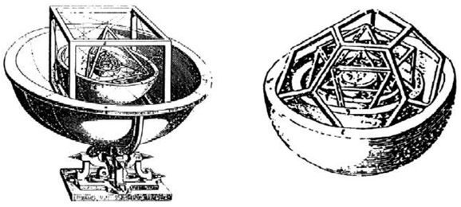
Figure 2.3. Platonic solids. (Illustration from Johannes Kepler, Mysterium Cosmographicum [“The Cosmographic Mystery”] [Tübingen, 1597].)
One of the very few Pythagoreans who remained in Italy was Archytas of Tarentum (ca. 428–350 BCE). He was not only a mathematician and philosopher but also a very successful engineer, statesman, and military leader. He befriended Plato in about 388 BCE, which gave rise to the belief that Plato learned the Pythagorean philosophy from Archytas, and that that is why he discussed it in his works. Aristotle, who was first a student in Plato’s academy but soon became a teacher there, wrote rather critically about the Pythagoreans. While Plato may have adopted many ideas from the Pythagoreans, such as the divine nature of planets and stars, in other cases he disagreed with them. Plato mentioned Pythagoras only once in his books, but not as a mathematician, despite his being in close contact with all of the mathematicians of his time and holding them in high regard.5 It is probable that Plato did not consider Pythagoras a proper mathematician. Similarly, Aristotle mentioned the Pythagoreans but said almost nothing about Pythagoras himself.6
In the fourth century BCE, the Greeks distinguished between “Pythagoreans” and “Pythagorists.” The latter were extremists of the Pythagorean philosophy and consequently often the target of sarcasm because of their unusual, ascetic lifestyle. Still, among the Pythagoreans there were some members who were able to command respect from outsiders.
After the fourth century BCE, the Pythagorean philosophy disappeared until the first century BCE, when Pythagoras came into vogue in Rome. This “Neo-Pythagoreanism” remained alive for subsequent centuries. In the second century, Nicomachus of Gerasa wrote a book about the Pythagorean number theory, whose Latin translation by Boethius (ca. 500 BCE) was widely distributed. Today, Pythagorean ideas permeate our thinking in a variety of fields, and the Pythagorean theorem can be applied and proved in a wide variety of ways.
For example, suppose we begin with a square with its sides partitioned into segments of lengths a and b, as shown in figure 2.4, where we have the square divided into rectangles, triangles, and two smaller squares. We then move the four right triangles into the position of a congruent square, as shown in figure 2.5. We know that the acute angles of a right triangle have a sum of 90°; therefore, the figure in the center of this square (fig. 2.5) is also a square with sides of length c. The two large squares in figures 2.4 and 2.5 are congruent—each has sides of length a + b, and the sum of the areas of the four congruent right triangles in each of the two figures are equal. Therefore, the two smaller (unshaded) squares in figure 2.4—which have a combined area of a2 + b2—must have the same area as the unshaded square in figure 2.5, that is, c2. Thus, we have a2 + b2 = c2, and the Pythagorean theorem is proved!
For someone adept at elementary algebra, figure 2.5 nicely leads to the Pythagorean theorem in yet a different way. The area of the entire figure can be expressed in two ways:
- you can find the area of the large square by squaring the length of a side (a + b) to get (a + b)2 = a2 + 2ab + b2, or
- you could represent the area of the large square as the sum of the areas of the four congruent right triangles,
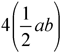
, plus the smaller inside square, c2. This is: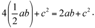
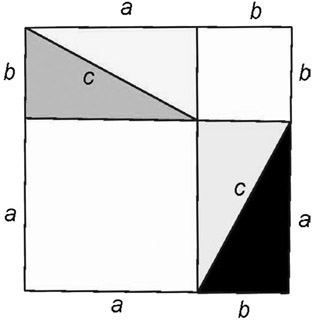
Figure 2.4.
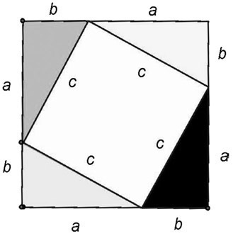
Figure 2.5.
Because you have two representations of the large square, you can simply equate them. Therefore, a2 + 2ab + b2 = 2ab + c2. Then, by subtracting 2ab from both sides of the equation, you end up with the simple equivalent of a2 + b2 = c2. This is the Pythagorean theorem as applied to the sides of any of the four congruent right triangles.
Today, there are more than 400 proofs of the Pythagorean theorem. In 1940, the American mathematician Elisha S. Loomis (1852–1940) published a book containing a collection of 370 proofs of the Pythagorean theorem done by many of the most famous mathematicians in history.7 Loomis also notes that none of the proofs uses trigonometry. Students of mathematics know that all of trigonometry depends on the Pythagorean theorem; therefore, proving the theorem with trigonometry would be circular reasoning. Loomis’s book also includes proofs provided by students and professors throughout the United States, as well as one presented by a United States president, James A. Garfield,which was published in 1876 in the New England Journal of Education under the title “Pons Asinorum.”8 Garfield’s proof is a very interesting example of in how many ways this most popular theorem can be proved; therefore, we present it here.
In 1876, while still a member of the House of Representatives, the soon-to-be twentieth president of the United States, James A. Garfield, produced the following proof. Garfield was previously a professor of classics and, to this day, he has the distinction of being the only sitting member of the House of Representatives to have been elected president of the United States. Let’s take a look at the proof he discovered.
In figure 2.6, ΔABC ≅ ΔEAD, and all three triangles in the diagram are right triangles.
Recall that the area of the trapezoid DCBE is half the product of the altitude (a + b) and the sum of the bases (a + b), which we can write as
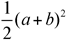
. We can also obtain the area of the trapezoid DCBE by finding the sum of the areas of each of the three right triangles: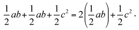
We can then equate the two expressions, since each represents the area of the entire trapezoid:
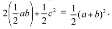
This can be simplified to 2ab + c2 = (a + b)2, which can be written as 2ab + c2 = a2 + 2ab + b2 or, in more simplified form, c2 = a2 + b2. This is the Pythagorean theorem as applied to right triangle ABC.
An astute reader may notice that Garfield’s proof is somewhat similar to the one believed to be used by Pythagoras (see fig. 2.5). If we “complete” a square from the given trapezoid in figure 2.6, we get a configuration similar to that in figure 2.5. This “completed square” is shown in figure 2.7.
And so we now have a little bit of history about the man we claim is responsible for what many people consider to be perhaps the most famous theorem in mathematics. The Pythagorean theorem is the one most people remember when they think back to their school years in mathematics.
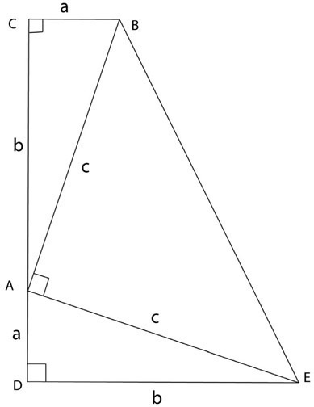
Figure 2.6.
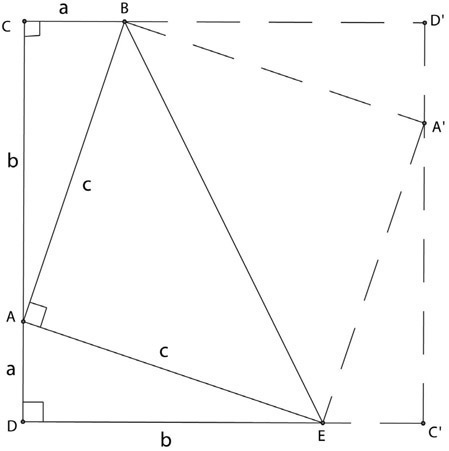
Figure 2.7.